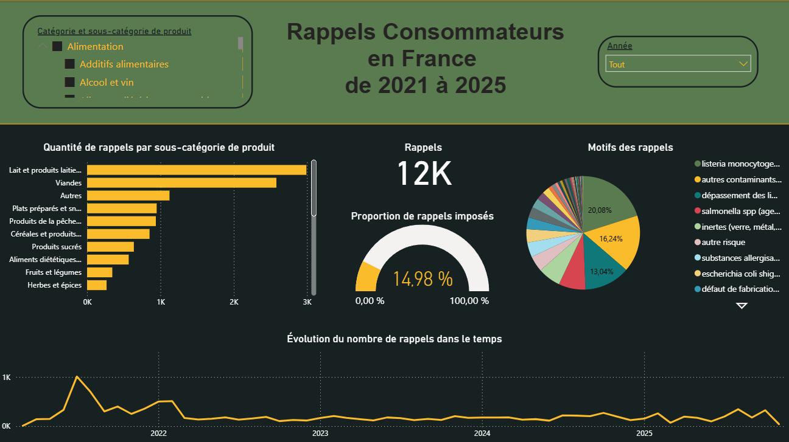

🚀 Projet 5. Analyse nationale des rappels alimentaires
🔎 Contexte
Les rappels de produits alimentaires représentent un coût important pour les entreprises : perte de matières, dégradation de l’image, baisse de confiance clients, risques juridiques.
Pourtant, peu de PME exploitent réellement les données publiques de Rappel.Conso.Gouv, faute d’outils simples pour analyser ces informations et en tirer des tendances utiles pour la maîtrise des risques.
J’ai donc entrepris de créer un dashboard Power BI complet, conçu pour aider les entreprises agroalimentaires à mieux comprendre les risques associés à leurs catégories de produits.
🎯 Défi
Les données de RappelConso sont riches… mais brutes, hétérogènes, parfois dupliquées, difficiles à explorer et peu opérationnelles pour un responsable qualité.
Le défi était donc de transformer cette base volumineuse en un outil visuel, fiable et actionnable, capable de répondre à ces questions clés :
- Quels produits sont les plus souvent rappelés ?
- Quels risques reviennent le plus souvent (microbio, allergènes, corps étrangers…) ?
- Quelles tendances se dessinent dans le temps ?
- Comment ma catégorie se situe par rapport au reste du marché ?
⚙️ Actions menées
Préparation et nettoyage des données :
- Import complet de la base RappelConso
- Nettoyage avancé : doublons basés sur l’ID, texte normalisé, dates corrigées
- Structuration des catégories, sous-catégories et motifs de rappel
- Mise en place d’un modèle de données robuste (relations, tables de dates…)
Modélisation et mesures DAX :
- Création de mesures pour compter les rappels uniques
- Calculs de pourcentages cohérents entre visuels
- Titres dynamiques selon le niveau de hiérarchie sélectionné
Construction du tableau de bord :
- “Vue générale” : hiérarchie Catégorie / Sous-catégorie et volumes de rappels
- “Motifs de rappel” : camembert + analyse des risques
- “Évolution temporelle” : tendance des rappels par motif dans le temps
- UX adaptée pour une lecture rapide (labels, filtres, interactions)
✅ Résultats obtenus
- Un tableau de bord interactif donnant une vision immédiate des produits les plus concernés
- Une analyse claire des risques dominants (ex. allergènes, bactéries, étiquetage…)
- Une identification facile des périodes sensibles au niveau national
- Une compréhension fine de la répartition des risques par sous-catégorie
- Un outil réutilisable pour la surveillance, les audits ou la préparation des plans HACCP

💡 Valeur ajoutée business
Ce tableau de bord permet à toute PME de :
- Anticiper les risques les plus fréquents pour son secteur
- Prioriser les plans de contrôle qualité en fonction des tendances nationales
- Se comparer au marché pour évaluer sa performance en sécurité alimentaire
- S’appuyer sur des données objectives lors des audits ou discussions avec les autorités
- Renforcer la prévention des rappels, et donc réduire :
- les pertes financières,
- les litiges,
- l’impact réputationnel.
En un mot : rendre les données publiques réellement opérationnelles pour la qualité !